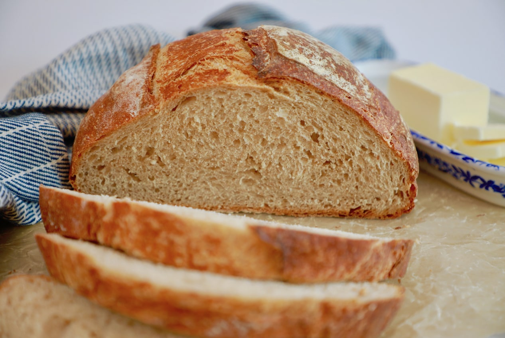

Tillbaka

Lätt lantbröd
Ingredienser
- 1 stor gul lök
- 25 g jäst
- 1 1/2 - 2 tsk salt
- 11 dl vetemjöl, gärna specialvetemjöl
Instruktioner
- Värm vattnet till ca 37°C, rör ut jästen och salt i vattnet. Blanda i mjöl. Arbeta ihop en smidig, lite kladdig deg. Låt jäsa under handduk i ca 45 min.
- Forma till en limpa (för 1 bröd) och lägg på en smord bakplåt. Låt jäsa under handduk i ca 30 minuter.
- Sätt ugnen på 200°C.
- Grädda limpan i ca 35 minuter, plus eventuellt 5 minuter på max värme, för att få en knaprig skorpa.
- Låt svalna på galler och skär upp i grova skivor.
Tillbaka